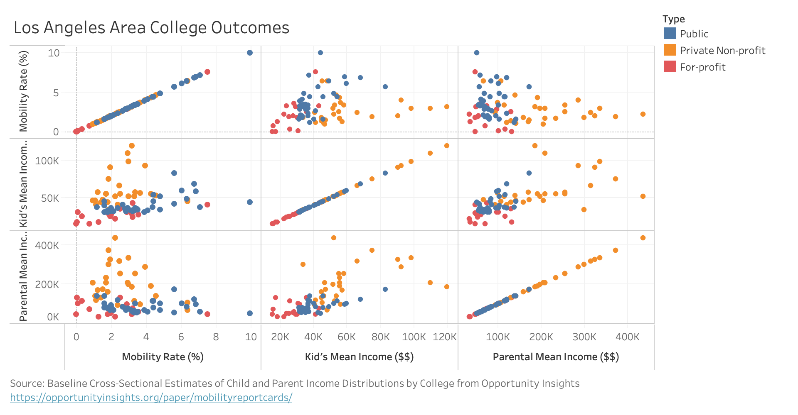

I took the full dataset CSV and used Excel to get only those schools in the Los Angeles commuting zone (column czname). This relies on the dataset's own encoding of commuting zones, which may not match with actual reality (for example, I live in what this dataset would consider the San Jose commuting zone, yet I attend school in San Francisco). I then manually created a new CSV file with only the relevant columns (type, k_mean, par_mean, mr_kq5_pq1) for those schools in Los Angeles. Again using Excel, I multiplied all the values in mr_kw5_pq1 by 100 to create percentages instead of decimals with many leading 0s, and sorted the type column so the legend appears in correct order. The reduced dataset used for my visualization is visible as la-4col-sort.csv.
Visualizations
How encoded data?? Scatterplot matrix blah blah
Tableau Prototype

D3 Chart
Conclusions
For-profit colleges are generally associated with lower mobility rates and incomes (both parental and student). Private colleges are associated generally with higher incomes, but lower mobility rates, sugesting that wealthier families tend to attend private colleges and maintain that wealth. Public schools seem to have the highest mobility rates, suggesting that lower-income students who go can then improve their income category.
I live on the Peninsula, and I love dogs and bubble tea! (Not dogs in bubble tea). This is my first front-end class. I finally found the option to change the theme.